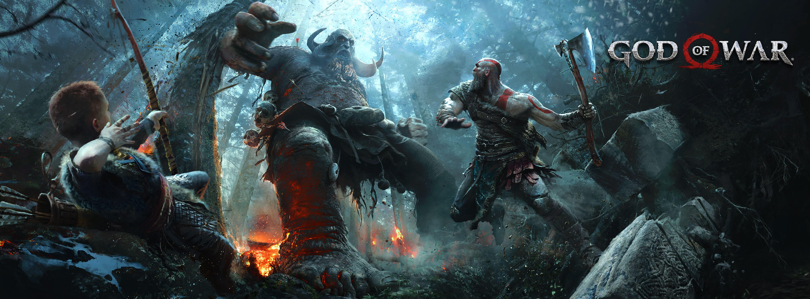

God of War
- É um jogo eletrônico de ação-aventura desenvolvido pela Santa Monica Studio e publicado pela Sony Interactive Entertainment (SIE). Lançado mundialmente em 20 de abril de 2018 para o PlayStation 4, é o oitavo título da série God of War e também o oitavo em ordem cronológica, sendo sequência dos eventos ocorridos em God of War III (2010).
Ao contrário dos jogos anteriores, que eram vagamente baseados na mitologia grega, este título é vagamente baseado na mitologia nórdica, com a maior parte do tempo situado na antiga Noruega no reino de Midgard. Pela primeira vez na série, há dois protagonistas principais: Kratos, o antigo deus da guerra grego que é acompanhado por seu jovem filho Atreus. Após a morte da segunda esposa de Kratos e mãe de Atreus, eles viajam para cumprir sua promessa de espalhar suas cinzas no pico mais alto dos nove reinos. Kratos mantém seu passado conturbado em segredo de Atreus, que não tem consciência de sua natureza divina. Ao longo da jornada, eles encontram monstros e deuses do mundo nórdico.
- Descrita pelo diretor criativo Cory Barlog como uma reimaginação para a franquia, a jogabilidade foi completamente reconstruída, com uma grande mudança sendo que Kratos não usa mais suas lâminas duplas como armas principais; ao invés disso, ele usa um machado de guerra mágico chamado Machado Leviatã. Outra mudança notável é a câmera; o jogo usa um sistema de câmera livre sobre o ombro em oposição à câmera fixa vista nos títulos anteriores. Além disso, o jogo não contém cortes de câmera e é apresentado em plano-sequência, sendo o primeiro jogo triple A tridimensional da história à apresentar uma cinematografia em plano-sequência. Há também elementos semelhantes aos jogos de RPG e o filho de Kratos, Atreus, pode fornecer assistência durante o jogo.
- God of War foi aclamado pela crítica especializada, recebendo elogios por sua narrativa, projeção do mundo, direção de arte, trilha sonora, gráficos, personagens, sistema de combate e sentimento cinematográfico. Muitos críticos acharam que ele havia revitalizado com sucesso a série sem perder a identidade central dos jogos anteriores. Foi bem-sucedido comercialmente, vendendo mais de 12 milhões de unidades até junho de 2019 e tornando-se um dos jogos mais vendidos de PlayStation 4 de todos os tempos. Considerado como um dos títulos mais importantes da oitava geração de consoles, God of War recebeu diversos prêmios, incluindo muitos de Jogo do Ano. Uma romantização do jogo foi lançada em agosto de 2018, seguida por uma série prequela de quadrinhos de quatro edições que foi publicada entre novembro de 2018 e fevereiro de 2019. Uma sequência ainda sem título está em desenvolvimento e prevista para ser lançada em 2022 para PlayStation 4 e PlayStation 5.

God of War III
- God of War III é um jogo eletrônico de ação-aventura e hack and slash desenvolvido pela Santa Monica Studio e publicado pela Sony Computer Entertainment (SCE). Foi lançado em 16 de março de 2010 para PlayStation 3. O jogo é o quinto da série God of War e o sétimo em ordem cronológica, sendo a continuação direta de God of War II (2007). Vagamente baseado na mitologia grega, o jogo é ambientado na Grécia Antiga com a vingança sendo o tema central. O jogador controla o protagonista e ex-God of War Kratos, depois da traição nas mãos de seu pai Zeus, rei dos deuses do Olimpo. Reignificando a Grande Guerra, Kratos sobe ao Monte Olimpo até ser abandonado pela titã Gaia. Guiado pelo espírito de Atena, Kratos luta contra monstros, deuses e Titãs em uma busca por Pandora, sem a qual ele não pode abrir a Caixa de Pandora, derrotar Zeus e acabar com o reinado dos deuses do Olimpo.
- A jogabilidade é semelhante aos títulos anteriores, concentrando-se no combate baseado em combos com a arma principal do jogador — as Lâminas do Exílio — e armas secundárias adquiridas durante o jogo. O jogador usa quick time events, na qual age em uma sequência cronometrada para derrotar inimigos e chefes mais fortes. O jogador pode usar até quatro ataques mágicos e uma capacidade de aprimoramento dos poderes como opções de combate alternativas. O jogo também apresenta puzzles e elementos de plataforma. Em comparação com os títulos anteriores, God of War III oferece um sistema de magia renovada, mais inimigos na tela, novos ângulos de câmera e conteúdo para download.
- Barlog retorna à direção de um God of War depois de comandar o segundo título da trilogia, lançado em 2007. Não poderia ser outra pessoa a comandar o game, já que a Sony Santa Monica disse, em painel no E3 Coliseum, que só faria um novo título caso ele ou David Jaffe, criador da franquia, retornassem para dirigir. "Eu trabalhei muito nesse jogo e ele precisa significar alguma coisa. Podemos ter jogos mais complexos e profundos", defende.
- A aproximação da câmera, de uma perspectiva afastada para o ombro de Kratos, também é uma maneira de deixar a história mais pessoal. "Sempre quis fazer isso", diz o diretor. A comparação com The Last of Us é óbvia, mas, apesar de dizer que gosta do exclusivo da Sony, não quer algo como a relação entre Ellie e Joel. "Kratos está no comando o tempo todo aqui. Existe uma correlação entre o relacionamento dos personagens. Mas não é igual", ressalta.
- No painel, também foi dito que todos os jogos de God of War até agora foram a "história de origem" de Kratos. "Quero que eles sejam mesmo. A história de origem mais legal de todos os tempos", diz Barlog.
Entretanto, apesar das referências ao passado, o diretor faz questão de afirmar que este é um novo começo. "Estamos mudando de era. É como antes e depois de Cristo. Estamos mudando tudo. Por isso o nome é apenas 'God of War'."